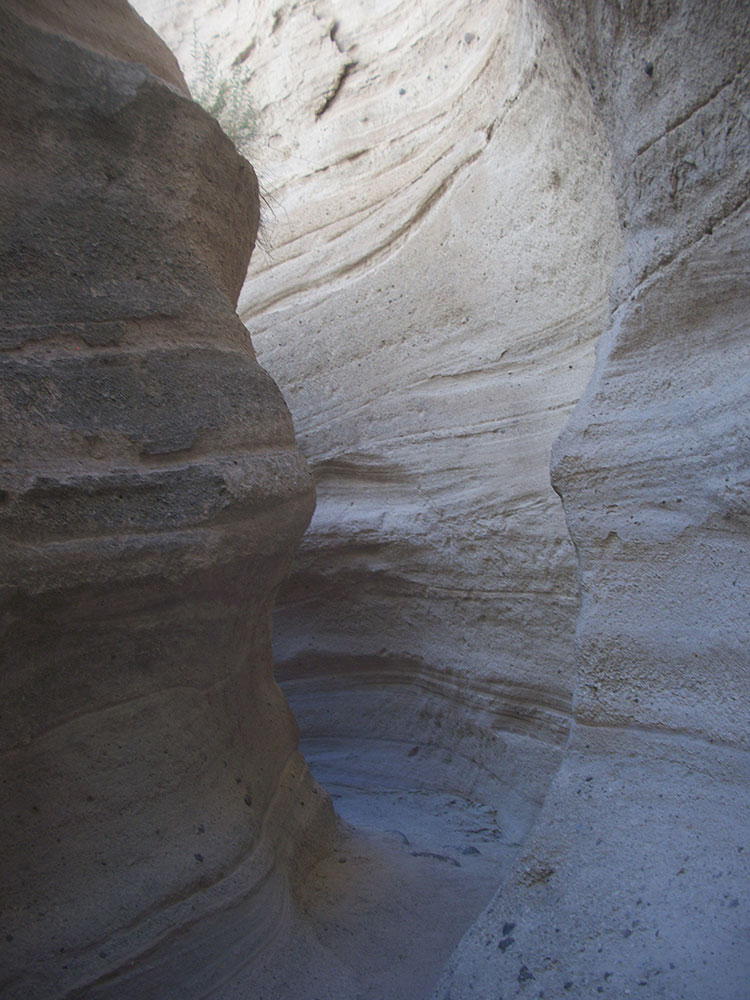
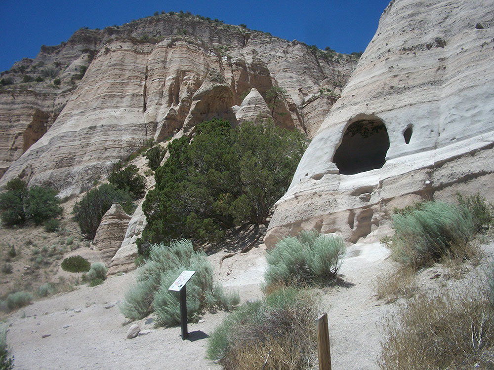
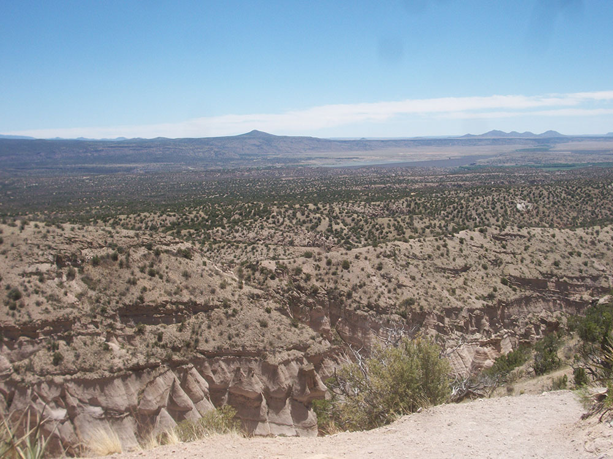
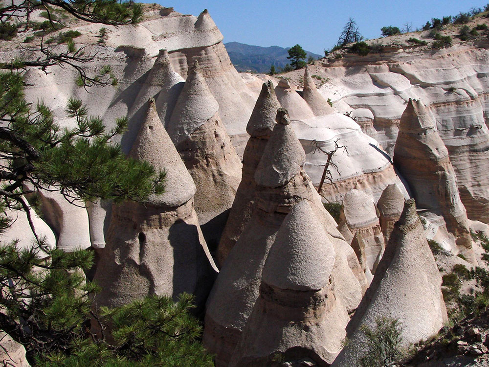

Monument owing its remarkable geology to layers of volcanic rock and ash deposited by pyroclastic flow from eruptions within the volcanic field that occurred 6 to 7 million years ago
General Information
Entry window: 8am to 1pm
Closed Tuesday–Wednesday and mid‑December through January (seasonal)
Advance reservation required
How to Get There
From Santa Fe (40 mi): Take I‑25 south to Cochiti Pueblo exit, then follow NM‑16 and NM‑22 to the monument entrance; follow posted signs to Tent Rocks.
Overview
Kasha-Katuwe Tent Rocks National Monument ("white cliffs" in the Keresan language of Cochiti Pueblo) protects a small but remarkable landscape of cone-shaped rock formations on the Pajarito Plateau of north-central New Mexico. The tent rocks, some as tall as 90 feet, were formed about 6 to 7 million years ago when volcanic eruptions in the Jemez Mountains laid down layers of pumice, ash and tuff that erosion has sculpted into hoodoos, many topped with harder caprocks. The 4,645-acre monument was established in 2001 and is jointly managed by the Bureau of Land Management and the Pueblo de Cochiti, on whose land it sits. It is popular for its slot canyon, its easy access from Santa Fe and Albuquerque, and its one-of-a-kind photography, and visitors must follow tribal rules and restrictions.
Access
The monument is about 40 miles southwest of Santa Fe and 55 miles north of Albuquerque, reached from I-25 via NM-16 and NM-22 through the Cochiti Pueblo community, then about 5 miles of paved and gravel road (BLM Road 1011) to the entrance gate. Entry is controlled and requires an advance reservation through Recreation.gov in most cases, along with an entrance fee. The monument may be closed by the Cochiti Pueblo Governor without notice for tribal events, so check the BLM website before driving out. No pets are allowed, and it is a day-use area with no overnight facilities.
Seasons
The monument is open for day use and is most popular in spring and fall, when temperatures are comfortable for hiking. Summer days can be very hot with little shade, so early reservations are best, and afternoon storms can create flash-flood danger in the slot canyon. Winters are cold and occasionally snowy, and the monument is sometimes closed for weather or tribal reasons. In fall the cottonwoods along the creek turn gold. Because of its popularity, parking is limited, so earlier entry times tend to be quieter.
Things to Do
Explore a Landscape of Cone-Shaped Rocks
Kasha-Katuwe Tent Rocks National Monument is a compact area of striking volcanic formations. Two trails lead visitors through the tent rocks and up a slot canyon to a mesa-top viewpoint.
Hike the Slot Canyon Trail
The Slot Canyon Trail is the signature hike, winding through a narrow canyon with walls that close in to just a few feet wide before climbing to the mesa top. The climb rewards hikers with wide views of the tent rocks, the Rio Grande valley and distant mountains.
Walk the Cave Loop Trail
A shorter, easier loop circles the base of the formations and passes a small cave that was likely used by Ancestral Puebloan people. It is a good option for families and anyone who prefers a gentler walk.
Photograph the Unusual Rock Formations
The pale pumice and tuff hoodoos change color through the day, and their layered textures and caps make them a favorite for photography.
Learn About the Cochiti Pueblo Connection
The land is sacred to the people of Cochiti Pueblo, who work with the BLM to protect it. Respect the rules, stay on the trails and do not climb on the formations.
Top Trails
Cave Loop Trail
Length: Approximately 1.2 miles loop
Elevation Gain: Minimal
Difficulty: Easy
This loop trail passes the tent rocks and a small cave and can be combined with the Slot Canyon Trail. It is a good introduction to the monument.
Slot Canyon Trail
Length: Approximately 1.5 miles one way
Elevation Gain: Approximately 630 feet
Difficulty: Moderate
This trail goes through a narrow slot canyon, over rocky steps and up a steep climb to the mesa-top viewpoint. It is the highlight of the monument but is not recommended during or after rain because of flash-flood danger.
Visitor Centers
The monument has no visitor center. A fee station at the entrance checks reservations and provides maps, and there are restrooms and picnic areas near the trailhead. Information is available on the BLM Rio Puerco Field Office website and at BLM offices in Albuquerque and Santa Fe, and the Cochiti Pueblo community has limited services. Because the monument can close with little notice, confirm the status online before traveling.
Camping and Lodging
There is no camping or lodging at the monument. Camping is available nearby at the Tetilla Peak Recreation Area at Cochiti Lake, about 20 minutes from the entrance. Hotels, inns and a wide range of restaurants are in Santa Fe, about 45 minutes away, and in Albuquerque and Bernalillo, about an hour away. Casino resorts near Santo Domingo and Santa Ana Pueblos also offer lodging. Check each property's website for current availability.
Recreational activities
The BLM maintains hiking trails as well as parking and restrooms at the site. The Slot Canyon trail is a one-way trail covering 1.5 miles (2.4 km) through a slot canyon and up a climb of 630 feet (190 m) to a lookout point where the tent rocks may be viewed from above. The Cave Loop trail is approximately 1.2 miles (1.9 km) and leads past the base of the cliffs, near some of the tent rocks and a small cavate similar to those found at the nearby Bandelier National Monument. The Veterans' Memorial Scenic Overlook, dedicated in 2004, includes a 1 mile (1.6 km) loop trail and views of Peralta Canyon and the Jemez Mountains. The overlook is located at the end of a gravel road approximately 3.5 miles (5.6 km) west of the tent rocks and may not be accessible depending on road and weather conditions.
The monument is open for day use only and may be closed by order of the Cochiti Pueblo Tribal Governor. Considerations for hiking include the possibility of flash flooding in the slot canyons and the high altitude of the monument.
This article uses material from the Wikipedia article and official pages for Kasha-Katuwe Tent Rocks National Monument, Tent Rocks Cave Loop Trail, American Southwest Hiking Guide, Tent Rocks Travel Guide, Things to Do at Tent Rocks, released under the Creative Commons Attribution-Share-Alike License 3.0. Additional information from the Bureau of Land Management.
Featured Trails
#Placeholder, #License, via Wikimedia Commons; Image Size Adjusted
Slot Canyon Trail
Difficulty: Moderate
Narrow slot canyon hike that climbs to a scenic overlook with panoramic views of the tent rock formations
#Placeholder, #License, via Wikimedia Commons; Image Size Adjusted
Cave Loop Trail
Difficulty: Easy
Easy loop trail offering close-up views of hoodoos and a small cave at the base of the formations
#Placeholder, #License, via Wikimedia Commons; Image Size Adjusted
Cave Loop + Slot Canyon Trail
Difficulty: Moderate
Combined route featuring both scenic loop walking and a climb through the slot canyon to a panoramic overlook






